← Índice de los 69 tutes de IDA
Tute 4 · Instrucciones de transferencia
▶ video afín (mismo autor, en x64dbg): «04 Instrucciones 2» · se conecta con: Herramientas · IDA · Instrucciones · Flujo · Debugger · Números
INTRODUCCIÓN AL REVERSING CON IDA PRO DESDE CERO PARTE 4
Mas instrucciones de transferencia de datos en IDA.
XCHG A, B
Intercambia el valor de A con el valor de B, veamos un ejemplo.
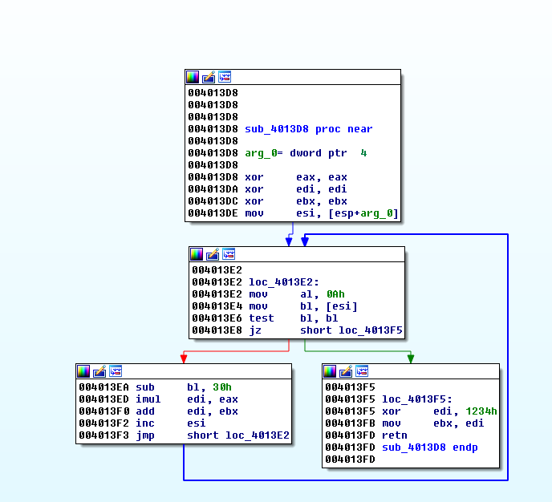
Ya que no hay XCHG en el VEVIEWER, cargo el CRACKME.exe de Cruehead y cambiare la instrucción de 0x4013d8.
Pongo el mouse en esa línea y voy al menú EDIT-PATCH PROGRAM-ASSEMBLE
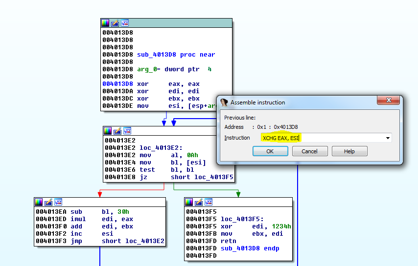
Vemos que se corrompió la función ya que justo debajo del XCHG quedo una parte que está marcada como datos.
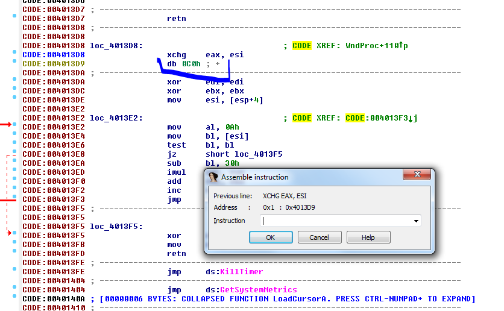
Ya habíamos visto que si no existe instrucción reconocida, esa zona es mostrada como data. En este caso es solo un byte que como no hay referencias en ninguna parte del programa, no hay aclaración a la derecha de la dirección, luego el tipo de dato que es db, un solo byte y el valor que es 0xc0 en este caso.
Así que si escribimos la instrucción NOP que es NO OPERATION o sea una instrucción de relleno que no hace nada, para que reemplace ese 0xc0.
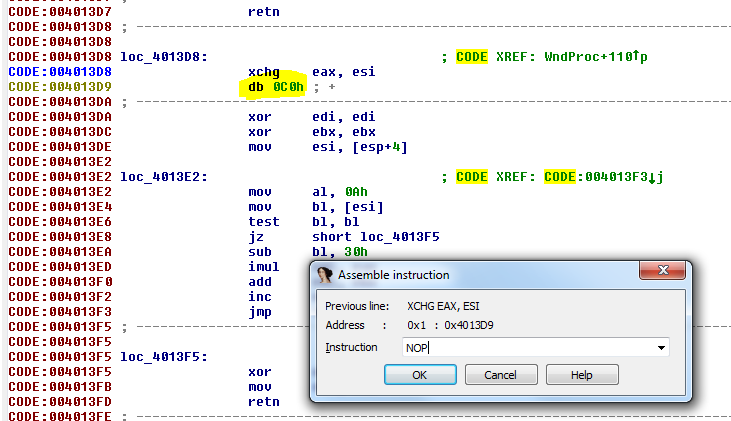
Allí queda el NOP
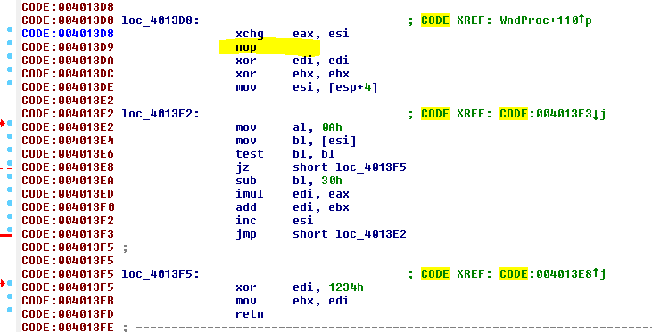
Todo muy lindo pero se me rompió la función. Si hay partes no reconocidas como código en el medio no la creara, pero ahora que quedo bien el código poniendo el NOP, intentamos haciendo click derecho en donde era el inicio de la función o sea 0x4013d8 y allí elegimos CREATE FUNCTION.
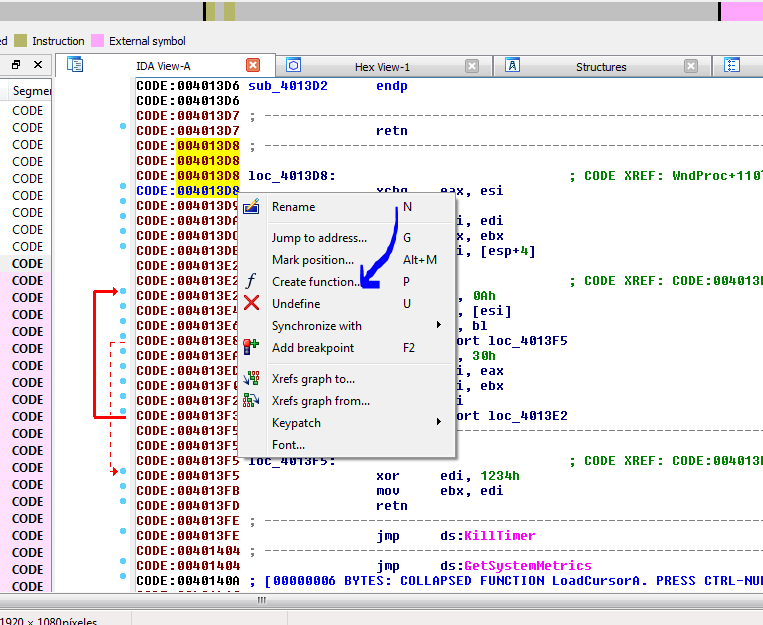
Y cambia el prefijo loc_ que delante de una dirección nos aclara que es una instrucción común, por el prefijo sub_ que nos informa que dicha instrucción es el inicio de una subrutina o función.
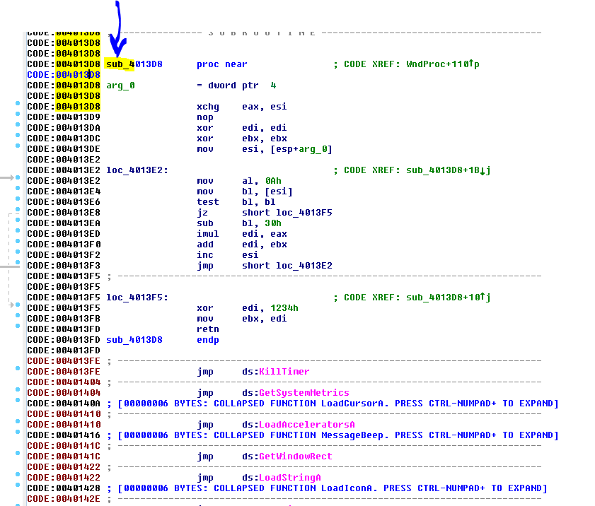
Ahora que ya es una función, si no está en modo grafico apretamos la barra espaciadora.
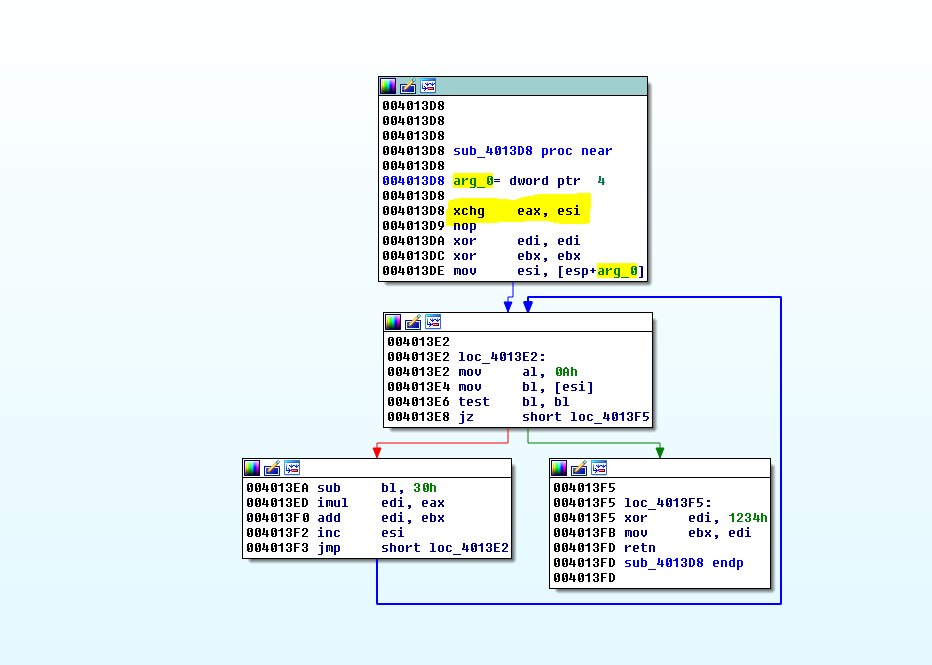
Ahí quedo más lindo y con nuestro XCHG allí puesto.
Bueno ya vimos que por ejemplo si EAX vale 12345678 y ESI vale 55 al ejecutar el XCHG nos quedara EAX valiendo 55 y ESI 12345678 en este ejemplo.
Como comentario vemos que en el menú PATCH hay un ítem llamado PATCHED BYTES que nos muestra lo que cambio y se puede REVERTEAR al original.
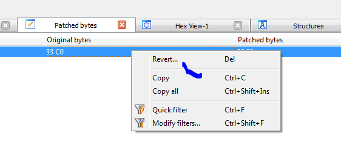
XCHG también puede intercambiar entre en registro y el contenido de un registro que apunte a una posición de memoria.
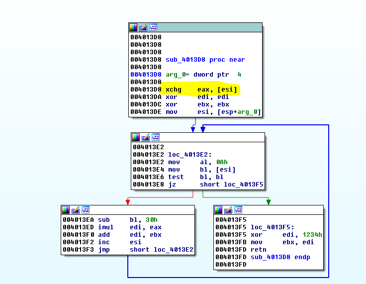
En este caso buscara el contenido apuntado por ESI y lo intercambiara por el valor de EAX que se guardara en dicha posición de memoria si tiene permiso de escritura.
Por ejemplo si EAX vale 55 y ESI vale 0x10000
Se fijara que hay en la posición de memoria 0x10000 y si es escribible, guardara allí el 55 y leerá el valor que había y lo pondrá en EAX.
Qué pasa si hacemos lo mismo pero en vez de usar un registro usamos una dirección de memoria numérica tal como hicimos en el MOV?
Como el comando ASSEMBLE no funciona completamente para todas las instrucciones, deberíamos cambiar los bytes allí en el menú donde dice PATCH BYTES, pero es preferible bajarse un plugin como el keystone que habilita escribir todas las instrucciones en forma sencilla.
https://github.com/keystone-engine/keypatch
https://drive.google.com/file/d/0B13TW0I0f8O2eU1VdUJzVjdYTWs/view?usp=sharing
KEYPATCH
Allí en el segundo link está el archivo keypatch.py que se debe copiar en la carpeta plugins del IDA y el instalador keystone-0.9.1-python-win32.msi que se debe instalar.
Además, se debe tener instalado Microsoft VC++ runtime library de 32 bits.
https://www.microsoft.com/en-gb/download/details.aspx?id=40784
Aquí si tienen problemas pueden leer los pasos de instalación.
http://www.keystone-engine.org/keypatch/
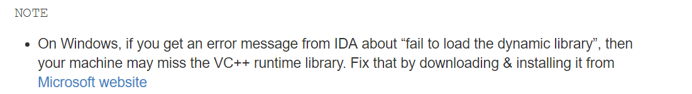
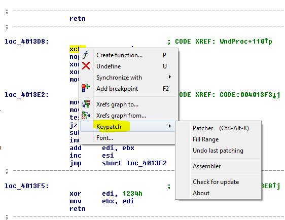
Allí eligiendo PATCHER
Vemos que escribiendo la instrucción en la forma más sencilla y con corchetes la escribirá y la transformara a la sintaxis del IDA.
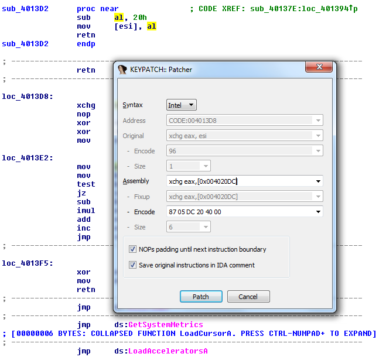
Y quedo
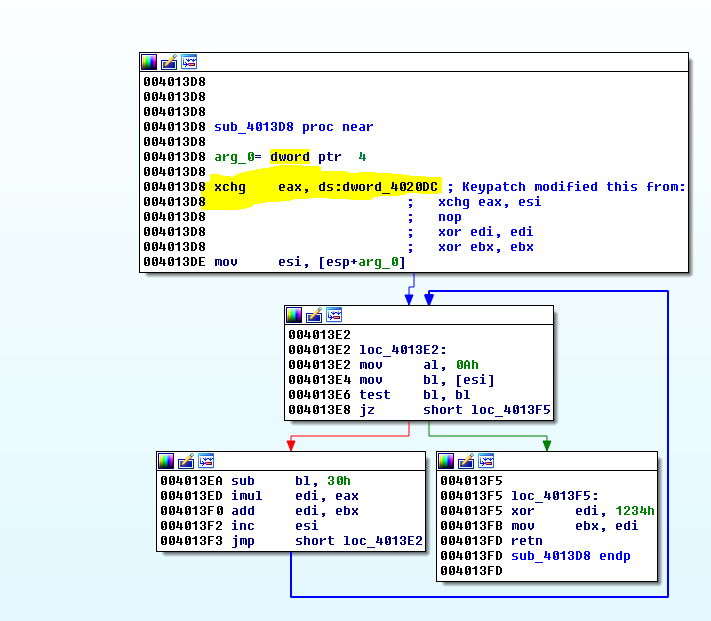
Tal como en el MOV cuando muestra el prefijo dword_ sin offset delante significa que intercambia el contenido de 0x4020dc por el valor de EAX .
INSTRUCCIONES ESPECIFICAS DE TRANSFERENCIA RELATIVAS AL STACK O PILA
QUE ES EL STACK o PILA?
Una pila (stack en inglés) es una sección de la memoria en la que el modo de acceso es último en entrar, primero en salir. Permite almacenar y recuperar datos.
Para el manejo de los datos se cuenta con dos operaciones básicas: apilar o PUSH, que coloca un objeto en la pila, y su operación inversa, retirar o POP que retira el último elemento apilado.
En cada momento sólo se tiene acceso a la parte superior de la pila, es decir, al último objeto apilado. La operación POP permite la obtención de este elemento, que es retirado de la pila permitiendo el acceso al que estaba debajo (apilado con anterioridad), que pasa a ser el nuevo ultimo objeto apilado.
En el CRACKME.EXE vemos ejemplos de ambas instrucciones.
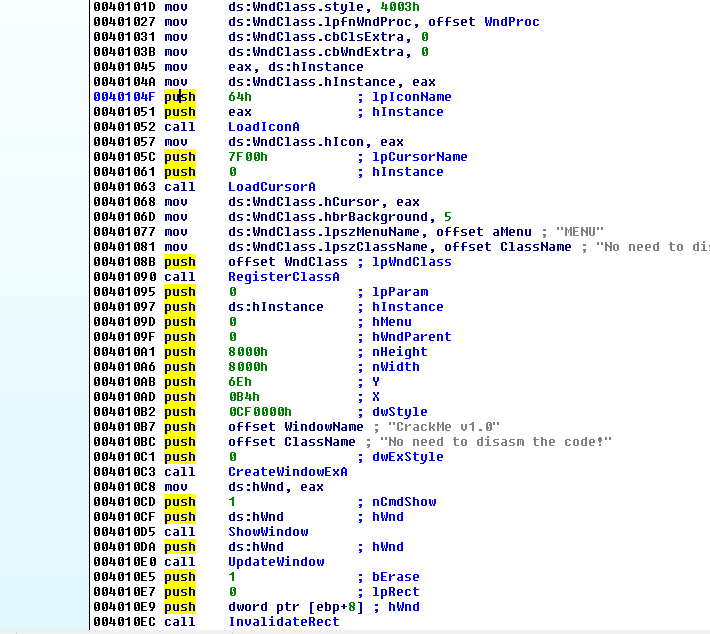
Normalmente en 32 bits se usa PUSH para enviar los argumentos de una función al stack, antes de llamarla con un CALL, vemos allí arriba ese ejemplo en 0x40104f.
PUSH 64 coloca el dword 64 en la parte superior del stack, luego PUSH EAX coloca encima del anterior el valor de EAX dejando debajo al anterior guardado y pasando este último a ser el tope del stack.
ESP valor de EAX
0x64
Allí vemos diferentes tipos de PUSH, podemos pushear constantes, pero también podemos pushear direcciones de memoria, como en este caso.
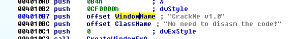
Vemos la palabra OFFSET delante del TAG correspondiente a una string, allí lo que pushearia sería la dirección cuyo contenido es una string o array de caracteres.
Si hacemos doble click en el tag que representa el nombre de la string WindowName.
En código fuente en C un array de caracteres se podría definir de esta forma
char cadena[] = "Hola";

Vemos que en este caso utiliza dos líneas para la descripción de la variable.
char WindowName[] lo coloca porque detecta de la api CreateWindow, a la que se le pasa el argumento el mismo debe ser un LPCTSTR que es un char[] y que dicho argumento es una string llamada WindowName.
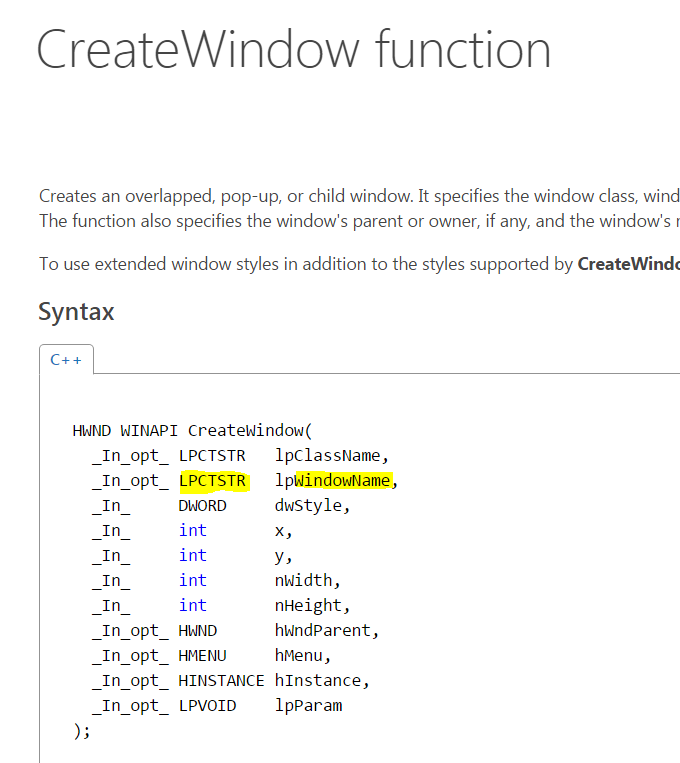
De cualquier manera, es una array de caracteres o bytes solo que IDA le agrega un poco más de info que obtiene de la api, vemos que luego de 0x4020e7 la siguiente dirección en el listado es 0x4020f4 o sea que hay varios bytes consecutivos que corresponden a los caracteres de la string “Crackme v1.0” y el cero que delimita el final de la string.
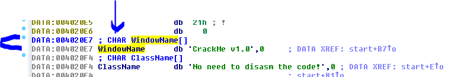
Si apretamos la tecla D para cambiar el tipo de dato encima de WindowName.
Vemos que podemos hacer que deje de detectar que es un array de caracteres y quede como db o byte.
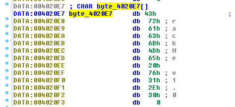
Son los mismos bytes correspondientes a la string Crackme v1.0 …
Vemos que en la referencia donde está la instrucción original cambio, obviamente la palabra offset delante hace que se siga pusheando el valor 0x4020E7 pero ahora como el contenido dejo de ser un array de caracteres y paso a ser un byte, la instrucción cambio a
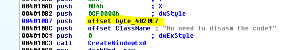
push offset byte_4020e7
Ya que cuando busca el contenido de 0x4020e7 para informarnos que es, allí hay un db o sea es una variable cambiada por nosotros a una de un solo byte.
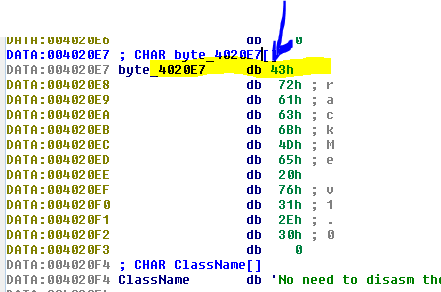
Apretando la A que es string ASCII vuelve a mostrarse como antes.
Asimismo si cuando trabajamos vemos alguna string como bytes sueltos
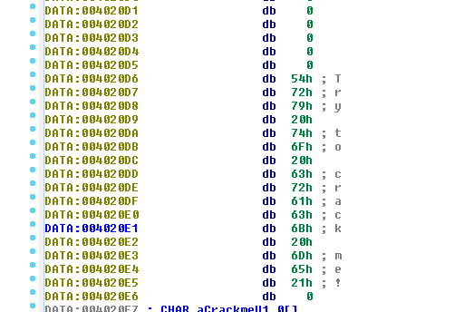
Yendo al inicio de la misma y apretando la A quedara mejor.
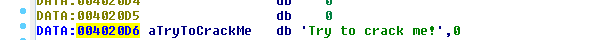
En este caso vemos que esta string no está definida en dos líneas, como la anterior ni dice que es un CHAR[], sino que solo está definida con un tag que empieza con la letra a por ser una string ASCII, en el caso anterior la aclaración que tenia de más venia porque detectaba que era un argumento de una api o función de sistema y esa le avisaba que ese argumento debía ser un char[] y por eso lo agregaba ahí, sino una string sin más aclaración, se verá como esta última.
Allí vemos otra string
Allí en 0x402110 comienza el primer byte de la misma se puede descomponer para verlos apretando D en aMenu.
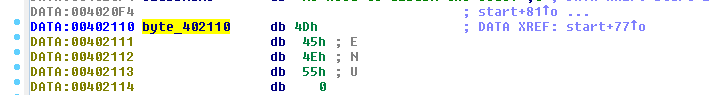
SI apretamos la A volvemos a lo que era originalmente
Si con X busco la referencia y voy a ver dónde usa esa string
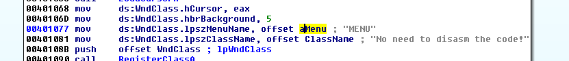
Vemos que allí guarda la dirección 0x402110 la ya que pone OFFSET delante.Normalmente cuando se les pasan argumentos a funciones veremos siempre el PUSH offset xxxxx ya que lo que se busca es pasar la dirección donde está la string si no tuviera la palabra offset estaríamos pusheando el contenido de la dirección 0x402110 que son los bytes 55 4e 45 4d de la misma string y las apis no trabajan de esa forma siempre se les pasa el puntero al inicio o dirección donde se inicia la string.
En el caso en esta instrucción que vemos arriba el prefijo DS:TAG indica que va a guardar en una dirección de memoria de la sección data (DS=DATA), más adelante cuando veamos estructuras veremos ese caso por ahora lo que importa es que guarda en la sección DATA en una dirección de la misma, la dirección que apunta al inicio de la string
POP
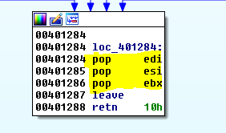
Es la operación que lee el valor superior del stack y lo mueve al registro destino en este caso vemos POP EDI leerá el primer valor o TOP del stack y lo copiara a EDI y luego apuntará ESP al valor que estaba debajo para que pase a ser el TOP del stack.
Si hacemos una búsqueda de texto de la palabra POP vemos que no se utilizan muchas variantes a pesar de que existe la posibilidad de POPEAR a una dirección de memoria en vez de a un registro, esta opción no es muy usada.
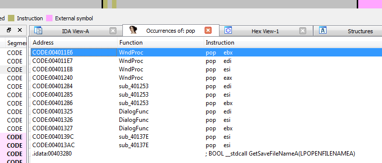
Seguiremos en la parte 5 con más instrucciones para poder meternos en el funcionamiento del LOADER.
BYE
Ricardo Narvaja